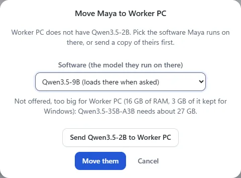

Moving staff to another PC
Drag a person to another desk; what fits, and what to do when the model is missing.
Drag a person onto another desk in the office, or drag them from the left panel onto a PC, to move them. The Move window opens: the software they run on there (their own model, when that PC has it), and they carry their box over to the new desk. A PC that is off or in use by its owner does not take a drop; nor, in the left panel, does a Backups only PC.

Only a model that fits
Only a model that fits that PC's memory can be picked. TOMLIN works out what each model needs (its file, its working memory and the runner) and compares it with that PC's memory as a whole: its RAM, with 3 GB kept for Windows, and the memory of its graphics cards (every card counts; a model is spread over them and the RAM). The need is an estimate and runs a little high, so a model is called too big only when it needs more than all that memory and 5% on top.
A model that will not fit is shown greyed with what it needs, and named under the list; one that only just fits says "tight fit". When none fits, Move them is not offered: send a smaller model there first, or move them to a PC with more memory.
TOMLIN checks again when Move them is pressed, so a move never goes through to a PC that cannot hold the model. A PC whose memory is not known (while it is off, for example) is not checked.
A yellow (!) on a PC
A yellow (!) on a PC's card in the left panel means its RAM is 95% in use or more right now, so a model may not load there until one is unloaded or other programs are closed (hold the pointer on it for the figures). The same (!) says when a linked PC runs an older TOMLIN.
When that PC has not got their model
When that PC has not got their model, the window asks Would you like to: and offers only what can work: Copy <model> to <PC>, then move them; Download <model> on <PC> from Hugging Face, then move them (when the model was deleted from this PC and is in TOMLIN's suggested list); or Use another model already on <PC>.
After Continue the window shows how far the copy or download is and moves them when the model is there; if you close the window first, they stay where they are, and the copy carries on (Models on my other PCs shows it). If the copy cannot start or fails, they stay where they are and the window says why.
More holds the sizes and the reasons a choice is not offered.